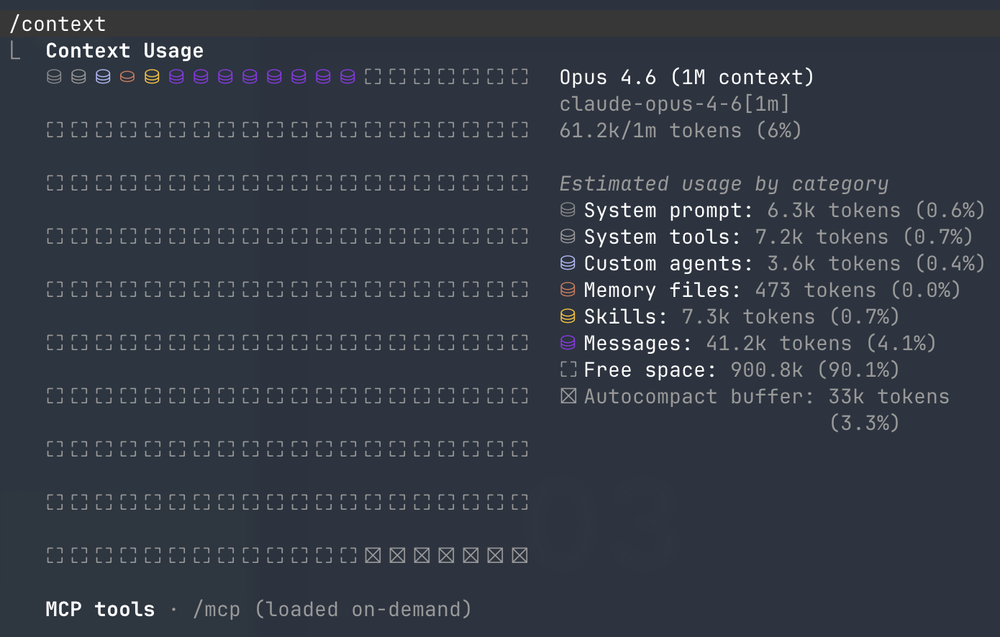

Skill · MCP는 Context를 먹는다
Skill, MCP는 생각보다 context를 많이 차지하고 pollution이 생길 수 있다. 안 쓰는 것들은 주기적으로 점검해서 정리하기.
/context 로 현재 사용량 확인
CLAUDE.md가 비대해질 때
관리 안 되면 중복·대치되는 내용이 쌓인다. AI한테 직접 점검을 시키자.
"CLAUDE.md, .claude/rules를 분석해서 논리적으로 문제가 없는지 + 중복되거나 대치되는 내용은 없는지 분석해줘"

/context — 카테고리별 토큰 사용량 확인